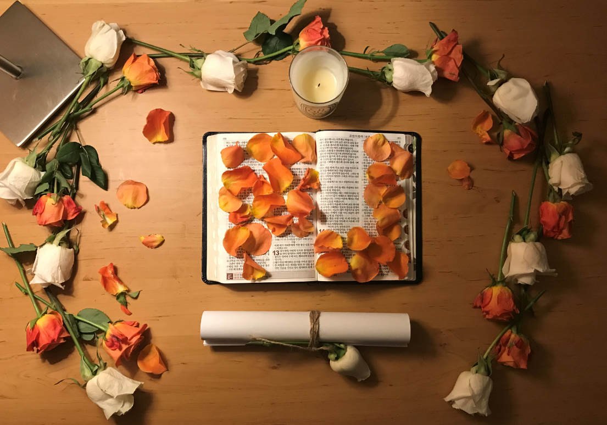
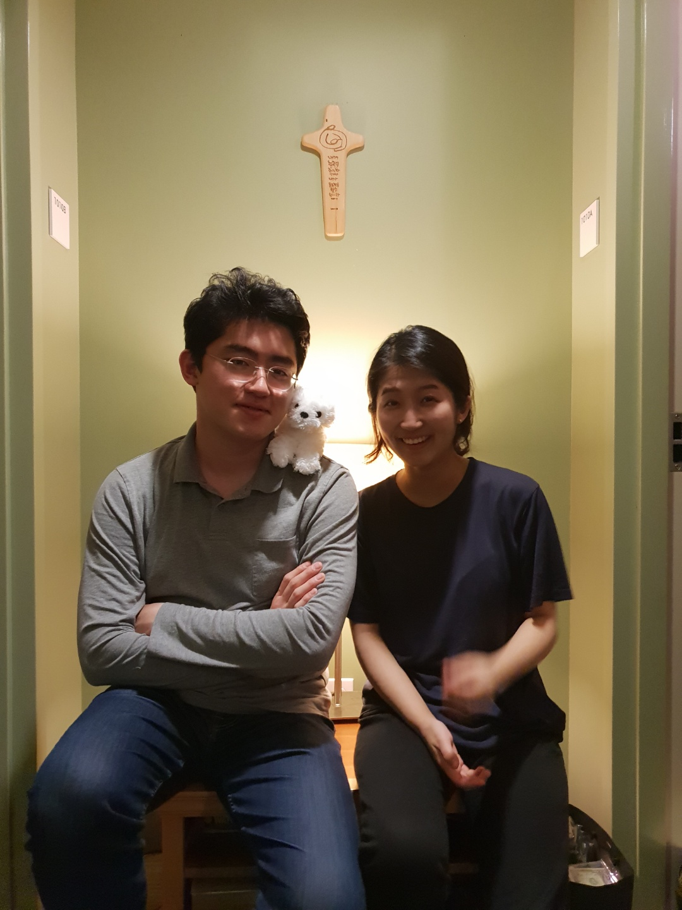
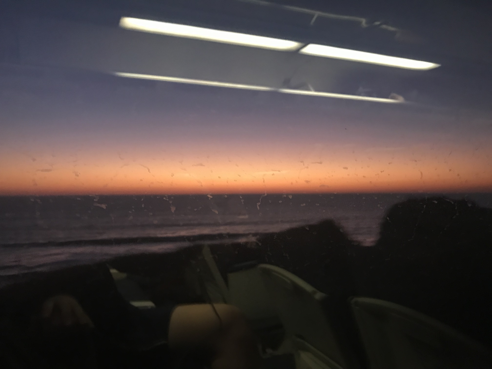
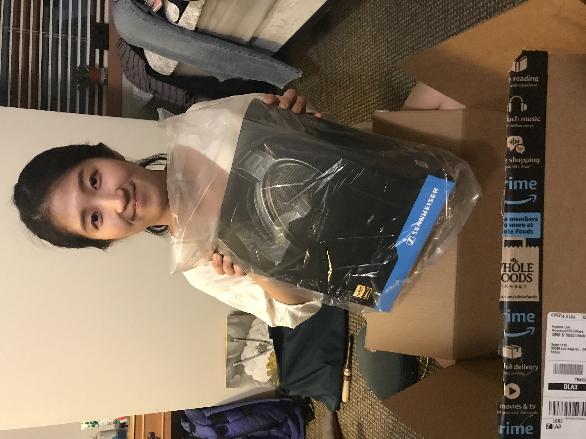

현애와 나의 사진들
내가 현애에게 편지로 고백한 날
너가 미국에 도착하고 집으로 올때 얼마나 떨렸는지..
지금도 그때를 생각하면 설레고 너가 어떻게 반응할지 궁금하기도 했고
하지만 그때 너가 힘들어 했었던것도 잘 알기에
조바심 내어선 안된다고 생각했었어.
그 전날에 준비하는 시간에는 내가 마치 어린아이가 된 느낌이었당.
난 아직도 이때의 마음이 그대로고 너를 사랑하는 마음도 그대로야.
선화방에서 같이 찍은 사진
이 사진은 보기만해도 기분이 좋다
저때 정말 재밌게 잘 놀았는데..
너도 저때를 기억하면 기분이 좋아지니?
샌디에이고
이 사진은 우리가 샌디에이고에서 행복한 시간들을보내고 집으로 가는길..
이날 컬투쇼의 할아버지 흉내를 많이 냈던걸로 기억하고 ...
 이 해산물은 정말 잊을수없는 마지막 저녁이었다...
이 해산물은 정말 잊을수없는 마지막 저녁이었다...
이제 현애 고기 못먹으니까 이런것만 먹어야 하는건가?,,,,
젠하이져 650
저 행복해 하는 표정을 보라....
저 날은 내가 더 많이 들었다고 한다....
뷁?!